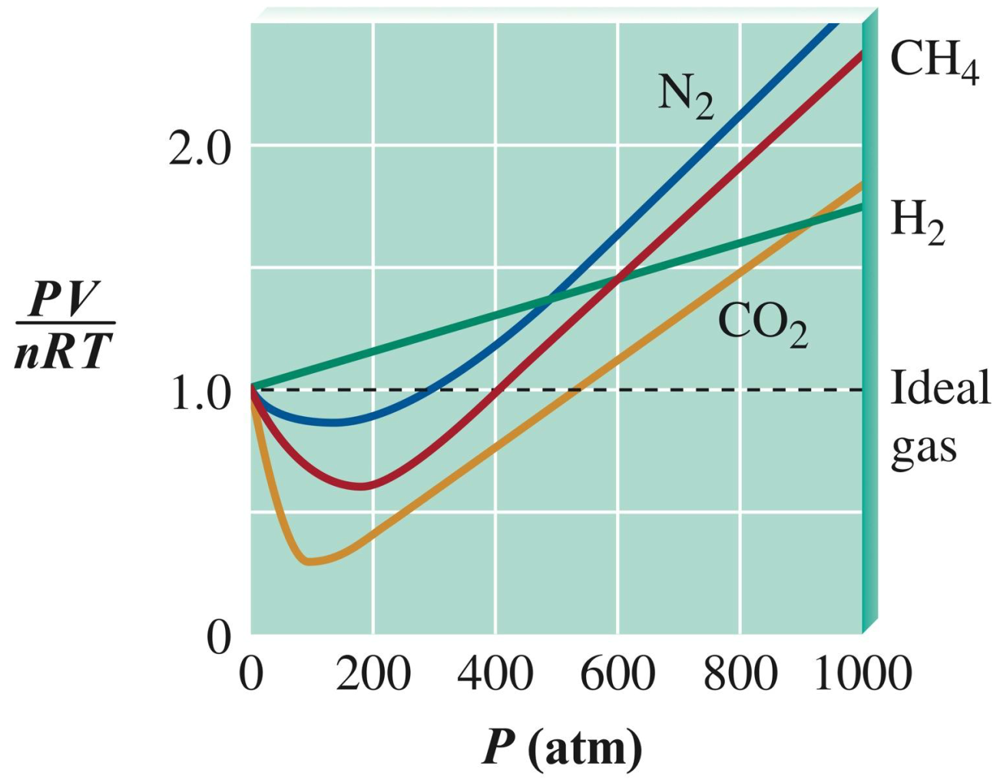
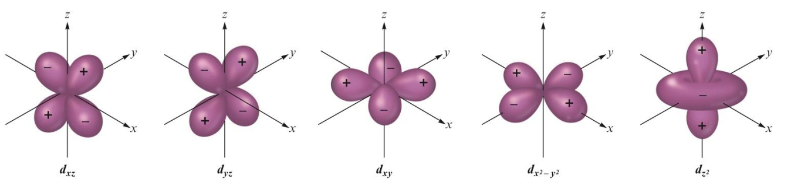
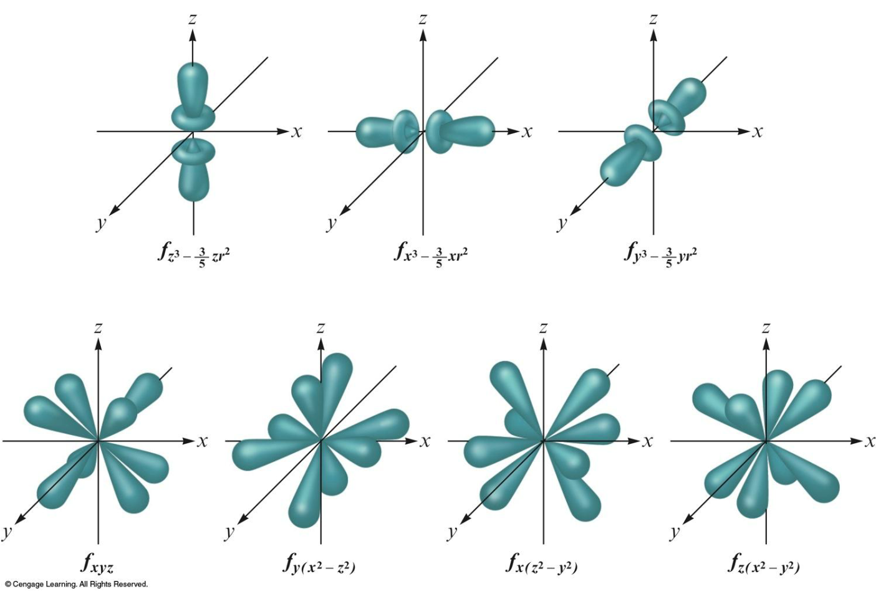

CHAPTER 01
一、有效位數判斷
有效位數（significant figures）表示一個測量值中具有意義的數字；判斷時要分清楚哪些 0 是測量資訊，哪些只是用來標示小數點位置。
算有效位數的數字
- 所有非 0 的數字都有效。
- 夾在非 0 數字之間的 0 有效。例如 16.07 有 4 位有效數字。
- 有小數點時，末尾的 0 有效。例如 13.00 有 4 位有效數字。
不算有效位數的 0
- 第一個非 0 數字前面的 0 無效。例如 0.0012 有 2 位有效數字，0.3 有 1 位有效數字。
- 沒有小數點時，整數末尾的 0 通常視為無效。例如依本章採用的規則，150 通常表示 2 位有效數字。
| 數值 | 有效位數 | 判斷原因 |
|---|---|---|
| 16.07 | 4 | 夾在非 0 數字之間的 0 有效。 |
| 13.00 | 4 | 有小數點，結尾的兩個 0 有效。 |
| 0.0012 | 2 | 前面的 0 只用來定位小數點。 |
| 0.3 | 1 | 小數點後、第一個非 0 前的 0 無效。 |
| 150 | 通常為 2 | 沒有小數點，末尾 0 通常不視為有效。 |
二、有效位數運算
不是所有運算都使用同一種判斷方式：乘除看「有效位數」，加減看「小數位數」。
乘法與除法
例如：
2.5 只有 2 位有效數字，因此答案寫成 8.6（2 位有效數字）。
加法與減法
例如：
0.3 只精確到小數第 1 位，因此答案寫成 12.4。
| 運算 | 判斷標準 | 要找最少的什麼？ |
|---|---|---|
| 乘法、除法 | 有效位數 | 最少有效位數 |
| 加法、減法 | 小數位置 | 最少小數位數／最不精確位 |
三、科學記號
把數字改寫成科學記號時，數值不能改變，而且原本的有效位數也要完整保留。
- 小數點向左移，指數為正。
- 小數點向右移，指數為負。
- 小數點移動幾格，就決定指數的大小。
- 係數 a 保留幾位數，就代表幾位有效數字。
| 原數字 | 科學記號 | 有效位數 | 說明 |
|---|---|---|---|
| 300. | 3.00 × 102 | 3 | 小數點表示兩個末尾 0 都有效。 |
| 3000 | 3 × 103 | 1 | 沒有小數點，末尾 0 只用來定位。 |
| 16.1870 | 1.61870 × 101 | 6 | 最後的 0 是有效數字，不能刪除。 |
| 0.00300 | 3.00 × 10−3 | 3 | 開頭的 0 無效，3 後面的兩個 0 有效。 |
CHAPTER 02
一、先用這個流程判斷
不要一看到下標就加 di-、tri-。先判斷化合物是哪一類，再套用規則。
- 化學式是否以 H 開頭，而且題目把它當酸？
是 → 使用酸的命名規則；否 → 繼續判斷。 - 是否為 metal + nonmetal？
是 → ionic compound；固定電荷用 Type I，多種電荷用 Type II。 - 是否為 nonmetal + nonmetal？
是 → binary covalent compound，使用數量前綴。 - 是否含有 polyatomic ion？
把多原子離子視為完整的一組，保留它的名稱，不拆開命名。
二、先認得這些字
| 英文 | 中文 | 命名時要想到 |
|---|---|---|
| binary compound | 二元化合物 | 只含兩種元素，不代表只有兩顆原子。 |
| cation | 陽離子 | 帶正電；離子化合物命名時放前面。 |
| anion | 陰離子 | 帶負電；命名時放後面。 |
| monatomic ion | 單原子離子 | 陰離子通常改成元素字根 + -ide。 |
| polyatomic ion | 多原子離子 | 整組共同帶電，名稱要整組記住。 |
| ionic compound | 離子化合物 | 通常是金屬 + 非金屬，或含多原子離子。 |
| covalent compound | 共價化合物 | 非金屬 + 非金屬，使用數量前綴。 |
投影片列出的常見族電荷
| 族 | 常見電荷 |
|---|---|
| Alkali metals，第 1A 族 | +1 |
| Alkaline earth metals，第 2A 族 | +2 |
| Halogens，第 7A 族 | −1 |
| Noble gases，第 8A 族 | 0 |
三、Type I：固定電荷的二元離子化合物
- 先念陽離子，再念陰離子。
- 單原子陽離子直接使用元素名稱。
- 單原子陰離子改成元素字根 + -ide。
- 不使用 mono-、di-、tri-。
- 固定電荷金屬不寫羅馬數字。
| 化學式 | 正確名稱 | 提醒 |
|---|---|---|
| KCl | potassium chloride | K+ + Cl− |
| MgBr2 | magnesium bromide | 不是 magnesium dibromide。 |
| CaO | calcium oxide | 不寫 calcium(II) oxide。 |
常見單原子陰離子
| 元素 | 陰離子名稱 | 元素 | 陰離子名稱 |
|---|---|---|---|
| F | fluoride | Cl | chloride |
| Br | bromide | I | iodide |
| O | oxide | S | sulfide |
| N | nitride | P | phosphide |
四、Type II：可能有多種電荷的金屬
- 根據陰離子的總負電荷，反推出金屬的正電荷。
- 在金屬名稱後用羅馬數字標出電荷。
- 羅馬數字代表金屬電荷，不是原子數量。
| 電荷 | 羅馬數字 | 投影片例子 | 名稱 |
|---|---|---|---|
| +1 | (I) | CuBr | copper(I) bromide |
| +2 | (II) | FeS | iron(II) sulfide |
| +3 | (III) | FeCl3 | iron(III) chloride |
| +4 | (IV) | PbO2 | lead(IV) oxide |
五、含多原子離子的化合物
多原子離子要視為完整的一組，命名時保留整組名稱；若化學式需要兩組以上，才在化學式中使用括號。
| 離子 | 英文名稱 | 中文 |
|---|---|---|
| OH− | hydroxide | 氫氧根 |
| NO3− | nitrate | 硝酸根 |
| NH4+ | ammonium | 銨根 |
| SO42− | sulfate | 硫酸根 |
| CrO42− | chromate | 鉻酸根 |
| C2H3O2− | acetate | 醋酸根 |
| NO2− | nitrite | 亞硝酸根 |
| SO32− | sulfite | 亞硫酸根 |
| ClO2− | chlorite | 亞氯酸根 |
| CN− | cyanide | 氰根 |
| 化學式 | 正確名稱 |
|---|---|
| NaOH | sodium hydroxide |
| Mg(NO3)2 | magnesium nitrate |
| (NH4)2SO4 | ammonium sulfate |
| Sn(OH)4 | tin(IV) hydroxide |
| CaCrO4 | calcium chromate |
六、Type III：二元共價化合物
- 適用於非金屬 + 非金屬。
- 第一個元素使用完整名稱。
- 第二個元素改成 -ide 形式。
- 使用前綴表示原子數量。
- 第一個元素只有一個時，省略 mono-。
- 不使用羅馬數字。
| 數量 | Prefix | 數量 | Prefix |
|---|---|---|---|
| 1 | mono- | 6 | hexa- |
| 2 | di- | 7 | hepta- |
| 3 | tri- | 8 | octa- |
| 4 | tetra- | 9 | nona- |
| 5 | penta- | 10 | deca- |
| 化學式 | 名稱 |
|---|---|
| CO2 | carbon dioxide |
| SF6 | sulfur hexafluoride |
| N2O4 | dinitrogen tetroxide |
| N2O5 | dinitrogen pentoxide |
| PBr5 | phosphorus pentabromide |
七、酸的命名
依投影片的判斷方式，酸通常由化學式最前面的 H 辨認。
1. 陰離子不含氧
| 化學式 | 陰離子 | 酸名 |
|---|---|---|
| HCl | chloride | hydrochloric acid |
| HCN | cyanide | hydrocyanic acid |
| H2S | sulfide | hydrosulfuric acid |
2. 含氧酸：-ate → -ic acid
不加 hydro-。
| 化學式 | 陰離子 | 酸名 |
|---|---|---|
| HNO3 | nitrate | nitric acid |
| H2SO4 | sulfate | sulfuric acid |
| HC2H3O2 | acetate | acetic acid |
3. 含氧酸：-ite → -ous acid
| 化學式 | 陰離子 | 酸名 |
|---|---|---|
| HNO2 | nitrite | nitrous acid |
| H2SO3 | sulfite | sulfurous acid |
| HClO2 | chlorite | chlorous acid |
八、考試最容易錯的地方
- binary 是兩種元素
N2O5 仍是 binary compound。 - 離子化合物不用數量前綴
MgBr2 是 magnesium bromide。 - 羅馬數字是電荷
TiO2 是 titanium(IV) oxide。 - 固定電荷不寫羅馬數字
CaO 是 calcium oxide。 - 共價化合物才使用數量前綴
先判斷元素種類再命名。 - 第一個元素省略 mono-
CO 是 carbon monoxide。 - 多原子離子不能拆開
NaOH 是 sodium hydroxide。 - 含氧酸不能加 hydro-
HNO3 是 nitric acid。
九、考前必背清單
- 能判斷 ionic compound 與 covalent compound。
- 知道 Type I 與 Type II 的差別。
- 會從陰離子總電荷反推金屬電荷。
- 背熟 mono- 到 deca-。
- 會把單原子陰離子改成 -ide。
- 背常見多原子離子的名稱與電荷。
- 背酸的三組轉換：無氧 hydro…ic、-ate → -ic、-ite → -ous。
CHAPTER 03
目前沒有另外整理的重點。
CHAPTER 04
一、簡易沉澱判讀
先用溶解度規則判斷生成物是否可溶。若產物只微溶（slightly soluble），在這類沉澱反應題中通常視為形成固體沉澱 (s)。
優先記住：一定先檢查的可溶規則
- 硝酸鹽（NO3−）通常可溶。
- 含 IA 族陽離子或 NH4+ 的鹽通常可溶。
完整沉澱表
| 離子／鹽類 | 通常情況 | 重要例外 | 中文記法 |
|---|---|---|---|
| NO3− | 可溶 | 本投影片未列例外 | 硝酸根通常溶 |
| IA 族、NH4+ | 可溶 | 本投影片未列例外 | 一族、銨根通常溶 |
| Cl−、Br−、I− | 通常可溶 | Ag+、Pb2+、Hg22+ | 氯溴碘，遇銀、鉛、亞汞就沉澱 |
| SO42− | 通常可溶 | BaSO4、PbSO4、Hg2SO4、CaSO4 | 硫酸根遇鋇、鉛、亞汞、鈣例外 |
| OH− | 大多只微溶 | NaOH、KOH 可溶；Ba(OH)2、Ca(OH)2 僅 marginally soluble | OH− 多半沉；Na、K 溶，Ca、Ba 僅有限度溶解 |
| S2−、CO32−、CrO42−、PO43− | 大多只微溶 | 含 IA 族陽離子或 NH4+ 時可溶 | 磷、碳、鉻、硫通常沉；遇一族或銨才溶 |
你的五句筆記，修正後這樣背
- NO3−、IA、NH4+ 通常可溶。
其中 NO3− 是陰離子規則；IA 與 NH4+ 是陽離子規則。 - Cl−、Br−、I− 通常可溶，遇 Ag+、Pb2+、Hg22+ 例外。
- SO42− 通常可溶，但 BaSO4、PbSO4、Hg2SO4、CaSO4 例外。
- OH− 不能直接背成「IA／IIA 都可溶」。
投影片只明列 NaOH、KOH 可溶；Ca(OH)2、Ba(OH)2 是 marginally soluble。 - PO43−、CO32−、CrO42−、S2− 通常只微溶。
只有搭配 IA 族陽離子或 NH4+ 時，才套用可溶例外。
快速例子
| 化合物 | 判斷 | 理由 |
|---|---|---|
| AgCl | 沉澱 | Cl− 遇 Ag+ 是例外。 |
| BaSO4 | 沉澱 | 是 sulfate 規則的明列例外。 |
| Na2CO3 | 可溶 | 雖含 CO32−，但 Na+ 是 IA 族。 |
| CaCO3 | 沉澱 | CO32− 通常只微溶，Ca2+ 不屬於規則 2 的可溶例外。 |
| KOH | 可溶 | K+ 是 IA 族，也是投影片明列例子。 |
CHAPTER 05
一、壓力單位
壓力是單位面積所受的力；SI 單位為 pascal（Pa）。
二、氣體定律
使用氣體定律前，先確認哪些變數保持不變；溫度一律換成 kelvin（K）。
| 定律 | 固定條件 | 關係 | 常用比較式 |
|---|---|---|---|
| Boyle's law 波以耳定律 | T、n 固定 | PV = k | P1V1 = P2V2 |
| Charles's law 查理定律 | P、n 固定 | V = kT | V1/T1 = V2/T2 |
| Avogadro's law 亞佛加厥定律 | T、P 固定 | V = kn | V1/n1 = V2/n2 |
三、分子速率與逸散
方均根速率（root-mean-square speed）
- R = 8.314 J·mol−1·K−1 時，M 必須用 kg/mol。
- 所得速率單位為 m/s；同溫下，摩爾質量越小，方均根速率越大。
Graham 逸散定律
vg 表示氣體的逸散速率；速率與摩爾質量的平方根成反比，所以較輕的氣體逸散較快。
四、真實氣體方程式修正
理想氣體忽略分子本身的體積與分子間作用力；高壓或低溫時，這兩項假設容易失效。
1. 高壓：修正分子本身占有的體積
高壓時分子被擠得很近，分子本身的體積已占據容器中不可忽略的部分。真正可供分子移動的自由體積為 V − nb，因此實際容積會比理想氣體式預測的值大。
2. 低溫：修正分子間吸引力
低溫時分子動能較小，分子間吸引力的影響變明顯；分子較少、也較弱地撞擊容器壁，使觀察到的壓力低於理想值。
3. van der Waals 方程式：兩項一起修正
| 常數 | 物理意義 | 數值變大代表 |
|---|---|---|
| a | 分子間吸引力的壓力修正 | 分子間吸引力較強。對大小相近的分子而言，極性分子通常比非極性分子有較大的 a。 |
| b | 分子有限體積的容積修正 | 分子本身的有效體積較大。 |
- 同族非極性粒子通常原子序越高、電子越多、可極化性越大，London dispersion force 越強，因此 a 往往上升。
- 粒子半徑或分子尺寸越大，排除體積越大，因此 b 往往上升。
五、真實氣體與理想氣體的差異
用壓縮因子（compressibility factor）判斷真實氣體偏離理想行為的方向。
| 條件 | 主導因素 | Z 的結果 | 要聯想到 |
|---|---|---|---|
| 理想氣體 | 忽略吸引力與分子體積 | Z = 1 | PV = nRT |
| 壓力趨近 0 | 分子相距極遠，作用力與分子體積影響都趨小 | Z → 1 | 所有真實氣體逐漸接近理想行為 |
| 低至中等壓力 | 分子間吸引力通常先占優勢，使測得壓力與 PV 偏低 | Z < 1 | attraction dominates |
| 很高壓力 | 有限分子體積與短距離排斥占優勢，使實際體積效應變大 | Z > 1 | excluded volume dominates |

六、空氣污染
光化學煙霧（photochemical smog）
- 汽、機車引擎的高溫使 N2 與 O2 生成 NO。
- NO 在空氣中進一步被氧化成 NO2。
- 中午附近的日光／紫外線使 NO2 → NO + O。
- 游離氧原子再與氧氣反應：O + O2 → O3，形成臭氧。
酸雨與燃煤脫硫
煤中的硫燃燒生成 SO2，再氧化成 SO3；SO3 與水形成具腐蝕性的硫酸，是酸雨來源之一。
煙道氣洗滌器（scrubber）可利用石灰石除去 SO2：
CHAPTER 07
一、電子能階
- 光子的能量是量子化的：原子吸收一個光子時，只有在 hν = ΔE 恰好等於兩能階差時才會發生躍遷；不能只吸收光子的一部分。
- 粒子碰撞：入射粒子的動能只要大於或等於能階差，就能把部分動能轉給電子；剩餘能量仍可成為粒子的動能。
- 電子往較高能階躍遷會吸收能量；降到較低能階會放出光子，且 Ephoton = |ΔE| = hν = hc/λ。
氫原子的能階差
二、量子力學、軌域與電子組態
Heisenberg 測不準原理
位置的不確定度 Δx 與動量的不確定度 Δ(mv) 無法同時任意縮小，因此不能把電子描述成具有確定路徑的行星式軌道。
波函數與軌域
- de Broglie：電子同時具有粒子與波的性質；允許的電子狀態必須形成符合邊界條件的駐波。
- ψ(r,θ,φ) = R(r)Y(θ,φ)：R(r) 描述徑向分布；Y(θ,φ) 決定角向形狀與方向。
- |ψ|2 表示在某處找到電子的機率密度；orbital（軌域）不是電子的固定運行路線。
四個量子數
| 量子數 | 允許值 | 決定 |
|---|---|---|
| n | 1, 2, 3, … | 主能階、軌域大小與大致能量 |
| ℓ | 0 到 n−1 | 副層／形狀；0、1、2、3 對應 s、p、d、f |
| mℓ | −ℓ 到 +ℓ | 軌域方向；一個副層有 2ℓ+1 個軌域 |
| ms | +½、−½ | 電子自旋；正負是兩種自旋狀態的量子標記 |
d 與 f 軌域形狀


穿透、屏蔽與填電子規則
- 同一主能階的穿透能力：s > p > d > f。穿透越強，越常靠近原子核，受到的有效核吸引越強，能量通常越低。
- Pauli exclusion principle：一個軌域最多 2 個電子，且自旋相反；同一原子中沒有兩電子具有完全相同的四個量子數。
- Hund's rule：同能量軌域先各自放入一個平行自旋電子，再開始配對。
- Aufbau principle：電子先填較低能量的軌域；常用順序為 1s → 2s → 2p → 3s → 3p → 4s → 3d → 4p → 5s。
三、游離能（ionization energy, IE）
從氣態原子或離子移走一個電子所需的能量：X(g) → X+(g) + e−。
- 同週期由左到右通常上升：同價層電子無法完全屏蔽增加的核電荷，有效核電荷上升，電子束縛更強。
- 同族由上到下通常下降：價電子離核更遠且屏蔽增加，較容易移除。
- 連續游離能：移完所有價電子後，再移核心電子會出現巨大跳升；可用跳升位置判斷價電子數。
同週期的兩組重要例外
| 比較 | 結果 | 原因 |
|---|---|---|
| s 副層全滿 → 第一個 p 電子 | IIA > IIIA | p 電子能量較高、穿透較差，比全滿 s 電子容易移除。 |
| p 副層半滿 → 開始配對 | VA > VIA | 半滿 p 較穩定；VIA 的成對電子排斥使其中一個較容易移除。 |
四、電子親和力（electron affinity, EA）
氣態原子得到電子時的能量變化：X(g) + e− → X−(g)。
- 同週期由左到右：通常變得更負，表示得到電子更有利。
- 同族由上到下：通常變得較不負（更正），表示得到電子的吸引力減弱。
- Cl 比 F 更有利：F 的 2p 軌域很小且擁擠，新電子受到較強排斥；Cl 的電子親和力因此比 F 更負。